SUE Design Manager Tutorial |
Part 4
Higher Level Schematics And Verilog Simulation
Higher Level Schematics
Verilog
- We have already simulated our little pulse generator in IRSIM and in HSPICE. Now we want to run a Verilog simulation. Unfortunately, you can't simply set nodes in Verilog like you can in IRSIM. You need to have a test file to drive them. To accomplish this we will first make an icon for our cell, and then wire our icon up to a clock generator that has been provided for you.
Adding Ports
- Before we make our icon we need to add some I/O ports to our circuit. We are going to place and name them as shown in Figure†14.
- Next, attach an
outputicon to the output of thenand2. Since we would like to look at more than one output, duplicate the output port (select, then d) and wire it up to the output of the third inverter as shown in Figure†14.Figure 14: Adding Ports to a Schematic
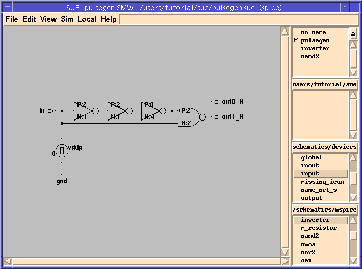
- For the outputs we will use a little trick that allows us to name multiple signals. It's not much for only two I/O's, but when you have 32, it helps a lot.
Naming Multiple Signals
- Select both of the
outputicons. You can do this by clicking the left mouse button on one of the outputs and Shift-clicking (hold down the Shift button while clicking with the left mouse button) on the other output. Or you can simply hold down the left mouse button (Button-1) and drag the selection box around both icons. Don't get any other icons (like thenand2) or you will name those also.
- Go to
Name Objectsin theEditmenu. TheName Selecteddialog box (see Figure†15) will appear. Type "out" in thename_prefixbox. Type "_H" forname_suffix. Change the direction from north(n)to south, "s". When you are finished clickDoneor hit Return.Figure 15: Name Selected Popup
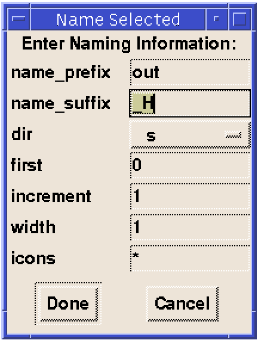
Making An ICON For Our Schematic
- We are now ready to create an icon for the
pulsegenschematic. Schematics only need icons when you want to instantiate them into other schematics -- which is what we are going to do.
- To make an icon, select
Make Other Viewfrom theViewmenu (or type Shift-c). This creates an icon forpulsegenand puts you into that icon view. It should look like Figure†16.Figure 16: Icon View
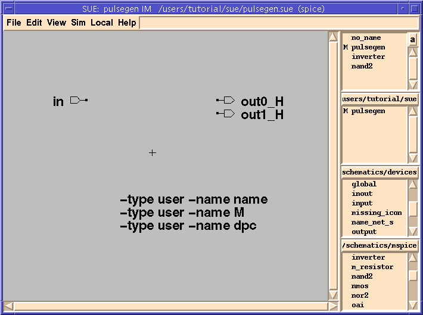
- You should now be looking at the icon view of
pulsegen. You can tell it's an icon since the title bar of the SUE window now has as `I' instead of an `S' in it. Also, sincepulsegennow has an icon, it appears in theIcon Listbox for this directory.
- Only the following elements can be placed in icons, which are essentially just pictures:
- I/O's: inputs, outputs, and inouts. At the locations of the origins of these icons, small solid dots will be displayed when the icon is placed into a schematic. No other icons can be placed into an icon (except a
title_barwhich is for documentation only).- The origin of the icon, which is notated with a "
+". All placement, rotation, flipping, etc. of the instantiated icon is relative to this origin. Schematics don't have origins, only icons do. The only thing you can do to the origin is move it around.- Property Definitions, which are text lines that begin with a dash ("-"). Don't add text to an icon starting with a dash unless it is a
Property Definition. TheName Propertyfor the icon, for example, is defined by the line "-type user -name name" and will then appear in theEdit Propertiesdialog box if you double-click on an instantiation of this icon (discussed more fully below).- Picture elements, like lines, arcs, and text. Don't add wires to icons.
- When SUE makes an icon, it places all of the I/O's from the schematic into the icon, with inputs in alphabetical order on the left, and outputs on the right. It also adds some default
Property Definitions(name, M,anddpcin this case).
- Now we want to draw a picture of what we want our pulsegen icon to look like when we place it into another schematic. For this example, we will just draw a box with some text in it. We are going to make our icon look like Figure†17:
Figure 17: Icon for Pulse Generator
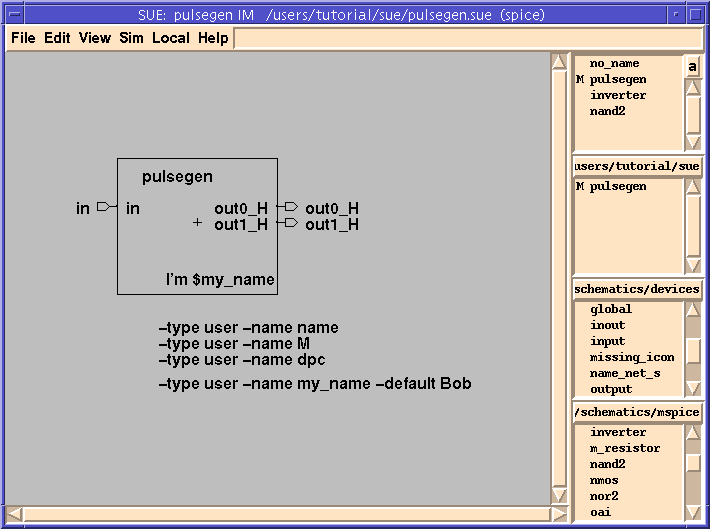
Drawing the ICON
- Start by drawing a box. You can make a box out of multiple lines, or by drawing a rectangle. Both generate the same thing in the SUE database, so use the one you find easiest.
- To draw a box using lines, use the l hotkey, or select
Add Line/Rectfrom theEditmenu. Click with the left mouse button (Button-1) to start your line and to add new line segments. Click the middle mouse button (Button-2) to end it.
- To draw a rectangle, use the
lhotkey orAdd Line/Rectfrom theEditmenu. Then click and hold down the middle mouse button (Button-2) and drag out the area you want for your rectangle.
- Notice the instructions which appear in the
SUE Message Area(to the right of theHelpmenu) when you begin to draw.
Adding Text
- Let's add some text to our icon. First, we will type in the name of the cell, so we know what the cell is when we look at a schematic with this icon instantiated in it.
- As mentioned earlier, the I/O icons get replaced with small solid squares. To help identify these ports, we should add text to them. You can add text to each of them individually, which can get tedious. To make this easier, SUE has a special feature for this called "
Duplicate Text".
- Now select both of the
outputicons together and hit Shift-t. Move the text inside the rectangle as shown in Figure†17.
- In order to personalize our icon, let's add a new property called "
my_name":
- You just defined a new property called "
my_name" and set its default value to "Bob". The "my_name" property will now show up in addition to the other properties when you double-click on the instantiated icon.
- Once you've defined a property, you want to use it. The simplest way to use a property is to display it. The way you display a property is by preceding it with a "
$" in a text line.
- and hit Return.
Placing Our ICON Into The Schematic
- We are now going to place a copy of the "
pulsegen" icon into the "pulsegen" schematic. This is handy for documentation since we can see both the schematic and the icon that goes with it at the same time. Don't worry, SUE is smart enough to know it's the icon for this schematic and to avoid recursive calls when netlisting.
- Place the icon toward the bottom of your schematic, as shown in Figure†18.
Figure 18: Schematic with Icon
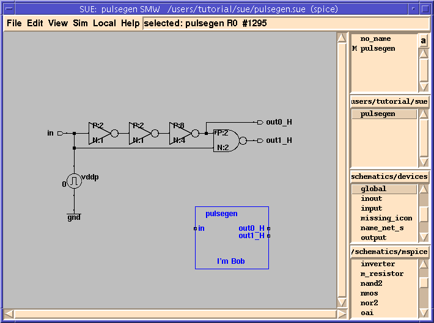
Modifying The ICON
- Just in case your name isn't Bob (yes, I know there are lots of you) let's change the value of `
my_name' in this instantiatedpulsegenicon.
- The icon should now say "
I'm <your name>". Notice that SUE automatically added the property "my_name" and the default "Bob" to theEdit Propertiesdialog box.
- Finally, let's add a
title barto our schematic. The title bar is another documentation feature. It automatically includes the schematic name, file name, date modified, and owner to the schematic. You can easily customize it to include your company name, too.
- Your schematic should now look like Figure†19. (The actual text in the title bar will be different than the illustration.)
Figure 19: Schematic With Title Bar
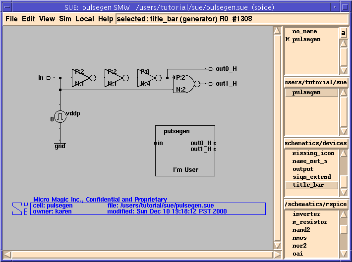
Using Pulsegen
- We are now going to build a test circuit to run our
pulsegen.
- Make a new schematic with Ctrl-n or
New Schematicin theFilemenu. Call the schematic "test_pg". This new schematic is going to look like Figure†20.Figure 20: Test_pg Schematic
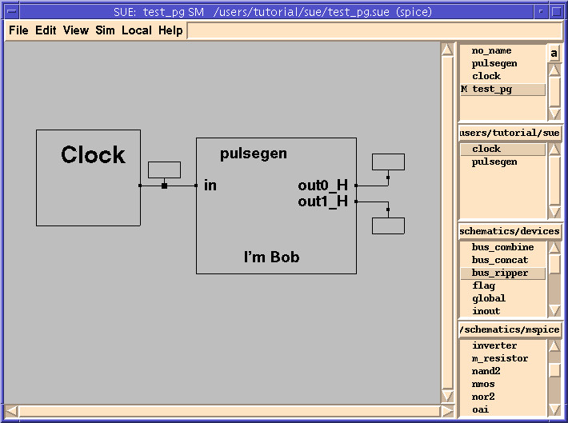
- Now build the circuit.
- Drop three "
flag" icons from thedevices Library. Attach them to the outputs of theclockand thepulsegenicons (refer to Figure†20 if needed). We will describe these later.
- You are now ready to simulate your circuit in Verilog.
- You just built a Verilog netlist using our "
pulsegen”and a behavioral model of "clock" (which has been provided).
- Now to run the simulator:
- If you don't have a Verilog simulator set up, skip the rest of this section. Continue the tutorial at Creating Behavioral Verilog Models.
- Type s or
Step Verilogin theSimmenu to step the time forward. This sends several cryptic lines to your Verilog simulator, which causes it to advance the time step 10 units. A "0" should appear in the flag nearest "clock", and a couple of "1"'s on the output flags, as in Figure†21.Figure 21: Step Verilog Shows Changes in Flags
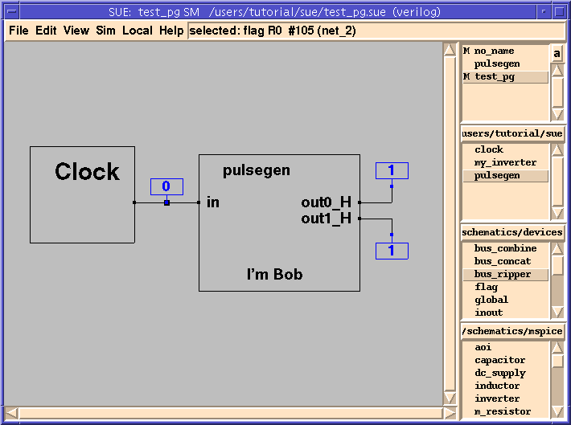
- You probably figured out what the flags are by now. They report the state of the nets they are attached to and are updated after every time step.
- The clock is designed to transition every other Verilog time step. Notice that the "
out0_H" flag changes every cycle and is the inverse of the clock. This makes sense since it is just the clock followed by three inverters. But what happened to our pulse on "out1_H"?
- In HSPICE and IRSIM all transitions take a finite time, unlike Verilog where you have to specifically add delays to transitions. What's happening is that the inverters are taking no time (or 0ns), so in Verilog our "pulse" lasts for 0ns! To fix this we will change the inverter model to add a delay.
Creating Behavioral Verilog Models
- We are now going to edit the schematic so that the inverters have a non-zero delay.
Figure 22: Changing Name To "my_inverter"
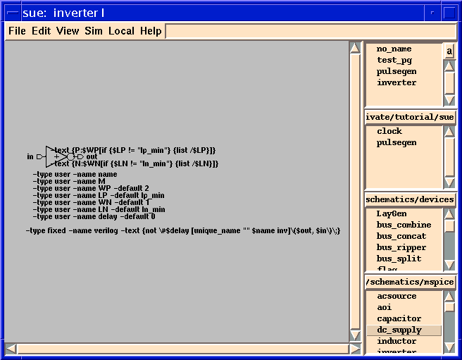
- The text you just edited tells the netlister how to netlist this cell when in Verilog Mode. Notice the "
#$delay" in the verilog string above. This adds the value of the delay property to the inverter. Because it is a user property, it shows up in theEdit Propertiespopup for the icon. Also, the actual net names are substituted for "$out" and "$in" during netlisting.
- Now let's get back to our pulse generator test circuit, "
test_pg", and simulate it again to see if we get a pulse.
- Re-netlist by hitting the Shift-n hotkey or
VERILOG Netlistin theSimmenu. Then do anInit Probe(Ctrl-i) to restart the simulator.
- The previous simulation will be stopped and a new one will be started.
Figure 23: Display Term Values
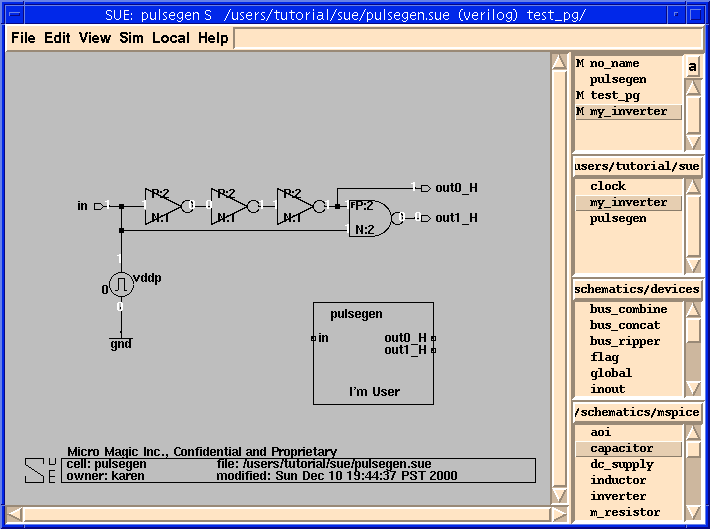
- In addition to the flags, you can have SUE display all of the terminal values in a given schematic with
Display Term Values. This is great for debugging!
Creating A More Complex Verilog Model
- For the inverter in the above example, the Verilog model could be described in a single line. If you need to write a more complex Verilog model, you can attach a Verilog text file to a schematic. Just because SUE looks like a schematic editor doesn't mean that everything you do has to be with schematics.
- Instead of modeling just the inverter, this time we'll model the entire
pulsegencircuit from the above example.
- Your text editor file will look like Figure†24.
Figure 24: Template for Verilog Model
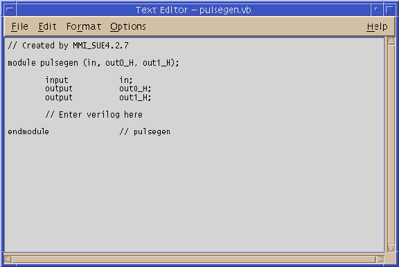
- Notice that SUE automatically creates a template for the Verilog model, adding the port information to the file. You only need to add the model for "
pulsegen" after the line:
// Enter verilog here
- Instead of creating the
pulsegenVerilog model, please wait for the next section, which has larger and more interesting example and includes Verilog models at many levels.
- SUE keeps track of your Verilog file and `attaches' it to your schematic. You can view or edit it any time by simply selecting
Edit Verilogfrom theSimmenu, as you did before. Since the file exists now, SUE will bring it up for you automatically. You can do this either from the schematic, or by selecting the icon in a higher level schematic.
- Notice that SUE has named your behavioral Verilog file "
pulsegen.vb" (note the "b"). If you want to write and attach your own behavioral Verilog files, they must have the ".vb" extension. Otherwise, SUE won't find them.
- You may have also noticed that when SUE creates a Verilog netlist, it gives us the extension of "
.vh". Why doesn't SUE just use the extension ".v" like everyone else? Simple, so SUE doesn't step on your existing ".v" Verilog files. The only time SUE uses the ".v" extension is to import port information from a user-written Verilog RTL file usingLoad Verilog I/O'sin theSimmenu.
- Before going on to a more interesting example, let's recap what you have done so far.
- You have:
- And you have done all of this from inside of SUE, without once having to run any other tools externally.
- Not bad, huh?
A More Complex Example
- Now let's look at something a little more complex and which has a few levels of hierarchy. The circuit is a simple 4-bit ripple-carry adder.
- Open the file "
test_ripple4.sue" that is in the tutorial directory. You should see something similar to Figure†25.Figure 25: Demo "4-bit ripple-carry adder" Schematic
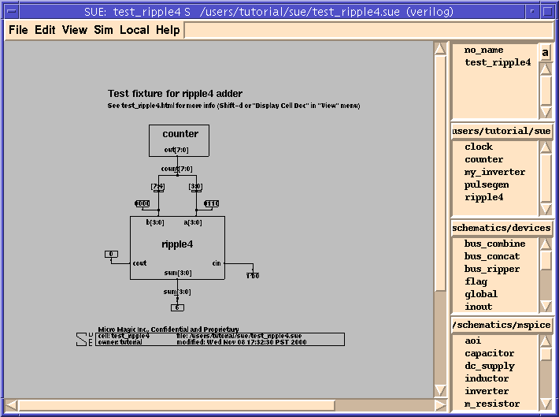
- This example has text documentation along with it as described in the text in the schematic. Let's look at it.
- You can also attach plain text files, in place of HTML files. SUE looks for the ".html" or ".doc" extensions to files with the same names as the schematic you are editing. It brings up ".html" files in your browser, and ".doc" files in your text editor.
- Now look over the
test_ripple4example. Push into all of the cells. It has documentation, buses, and lots of other interesting things not covered in your simplepulsegenexample.
- You should see something like Figure†26. SUE pushed down into the instance the net is connected to, highlights that net in the
ripple4schematic and zooms in on it.Figure 26: Push Into Selected Net
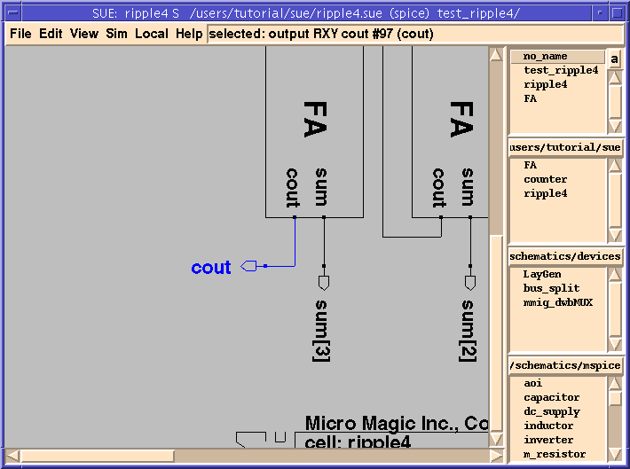
- Select the
a[3:0]net, then type Alt-e (or selectPop Connectedfrom theViewmenu). You should see something like Figure†27. SUE popped up one level of hierarchy, and highlighted the net which connects toa[3:0]and the instances connected to this net.Figure 27: Pop Up In Hierarchy Of A [3:0] Net
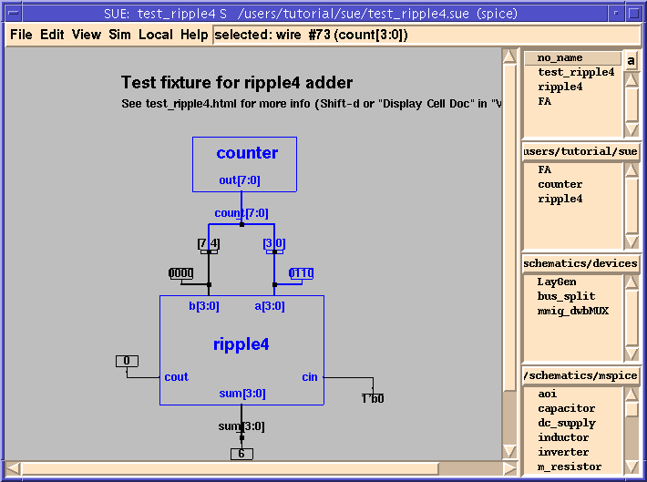
Displaying Design Hierarchy, and Controlling The Simulation
- One of the more powerful features in SUE is that it can change what you simulate on the fly. The
Display Design Hierarchyfeature allows you to not only display the hierarchy, but to control what level of the design gets simulated.
- During netlisting, SUE uses a very simple algorithm to decide what to do with subcells. If the subcell icon has a Verilog property and you are in Verilog simulation mode, then it uses that property to netlist the cell, ignoring any schematics or hierarchy below it. Otherwise it netlists its schematic.
- Let's look at the
ripple4icon to see if there is a Verilog property.
- You should see a line that looks like:
-type auto -name verilog -text ...
- This is the Verilog property. It tells SUE exactly how to netlist this icon in Verilog. If this seems complicated, realize that it is simply a function of the name of the icon and the port names and can be generated by the
Create Verilog Propertycommand.
- If you wanted to simulate the
ripple4schematic, you would then need to remove this property. Instead of removing the property, we can tell SUE to ignore it with theDisplay Design Hierarchycommand.
Using Display Design Hierarchy To Netlist
- Now we are going to use
Display Design Hierarchyto control the netlisting.
- Now select
Display Design Hierarchyin theSimmenu. It will netlist your cell and pop up theDesign Hierarchymenu on top of your schematic, as shown in Figure†28.Figure 28: Design Hierarchy Dialog Box
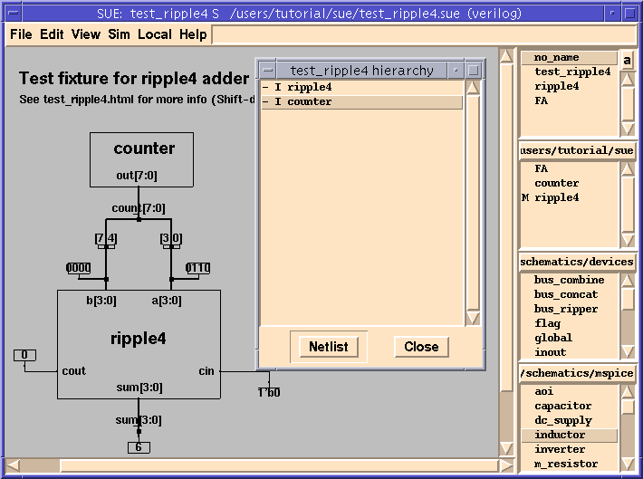
- The
Design Hierarchypopup tells you that the two icons "ripple4" and "counter" were netlisted with their Verilog properties. Let's tell SUE to netlist theripple4schematic and ignore its Verilog property:
- The "
I" in- I ripple4should have changed to "S", meaning that the Verilog property is now ignored for this icon and theschematicwill be netlisted.
- Hit the
Netlistbutton in theDesign Hierarchypopup. SUE re-netlists this schematic and now shows you that there is aFAicon whose Verilog property is being used.
- Click with Button-1 on "
- I FA" in theDesign Hierarchypopup and then click onNetlist. You should see the devices contained in theFAcell (see Figure†29). Likewise thetest_ripple4.vhfile will include all of this hierarchy.Figure 29: Expanded Design Hierarchy
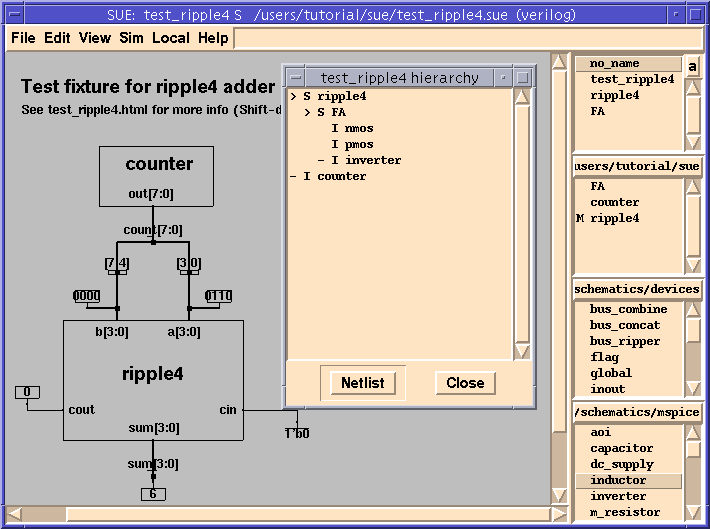
Mixed-Mode Verilog Simulation
- When we simulate our circuit in Verilog, SUE uses the following Verilog command line arguments "
+libext+.vb+.v -y . -y lib.v". These instruct Verilog to look for any undefined modules in either the current directory (".") or the subdirectory ("lib.v") and look in files with extensions of ".vb" or ".v". (Note: you can add to or change these options in the.suercfile - see the Micro Magic Tools SUE User Guide for more information.)
- Therefore, we need to make sure that we have defined Verilog modules for any icons whose Verilog properties we use (unless they are included inline in the icon view, like the
inverter/my_inverterexamples above). Let's make sure we have the ".vb" files:
- You should see that we have defined the adder behavioral model with the line:
assign {cout, sum[3:0]} = {1'b0, a[3:0]} + {1'b0, b[3:0]} + {4'b0, cin};
- So if we netlist
test_ripple4with theripple4Verilog property, our simulation will be very fast since it only executes this one line instead of the underlying hierarchy. Let's do it.
- Now let's simulate with all of the hierarchy:
- By changing the
Display Design Hierarchyin SUE, the designer or verification person can change what is being simulated on the fly. Thus, schematics can be "flattened" to verify that they are correct down to the "transistor" level, or simulations can be done at very high-level behavioral levels to increase speed.
- In addition, mixed-level simulations can also be done. That is, simulate high-level behavioral models for some blocks, and flatten others down to the transistor level.
- Most importantly, what you see in the
Display Design Hierarchywindow is what you get when you simulate. You never have to wonder what you are actually simulating!
- When you are done looking over the adder example go to the next section. You can also run SPICE or IRSIM on this example.
Buses
- While the
ripple4example circuit uses simple bused wires or buses, it doesn't demonstrate bused instances or bus concatenation. An alternative "ripple4" schematic was created to demonstrate these features.
- Open up the schematic
alt_ripple4. It should look like Figure†30.Figure 30: "alt_ripple4": Alternative Ripple-Carry Adder Schematic
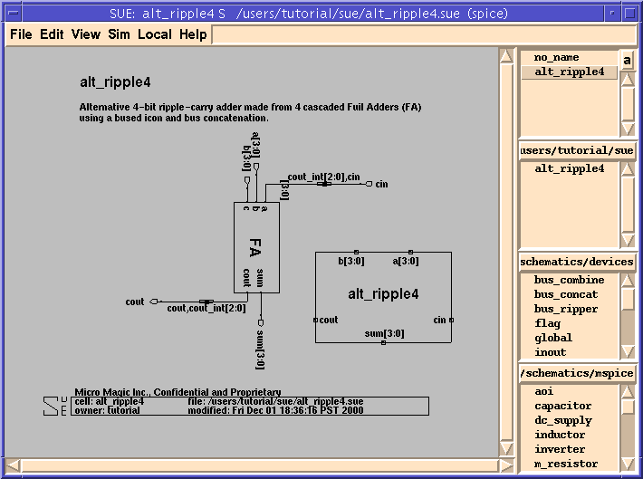
- Look at the "
a" input to theFAicon. We want this to be connected to the "cout" output of the previousFAor "cin" if it is the first one. This is done by labelling the net with aname_net_sicon with the name "cout_int[2:0],cin". The comma (",") causes a Verilog bus concatenation. "cout_int[2:0]" are the three nets that go from "cout" on oneFAto "cin" on the next one. For more examples of buses, see the Micro Magic Tools SUE User Guide.
| ----- Micro Magic ----- |